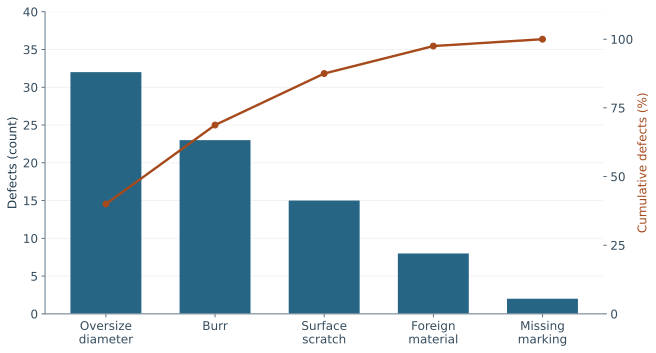
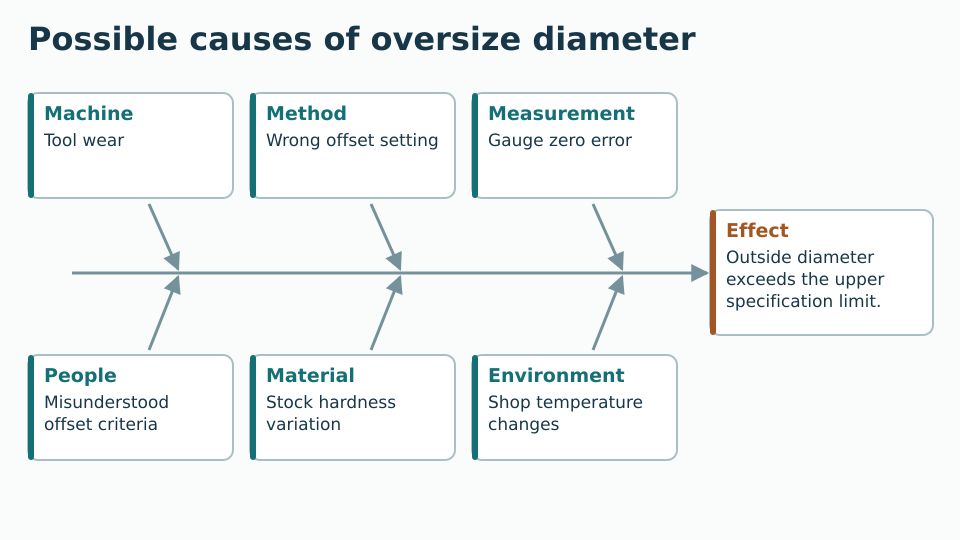
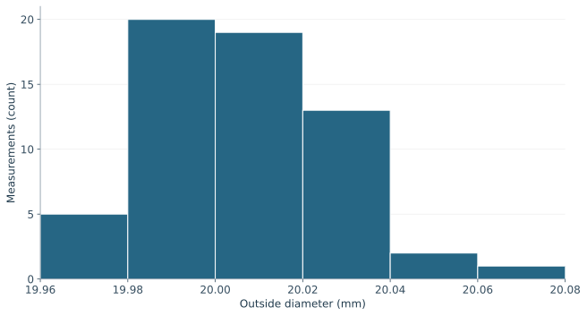
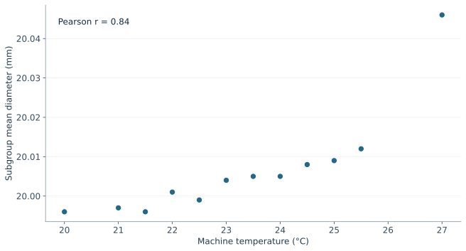
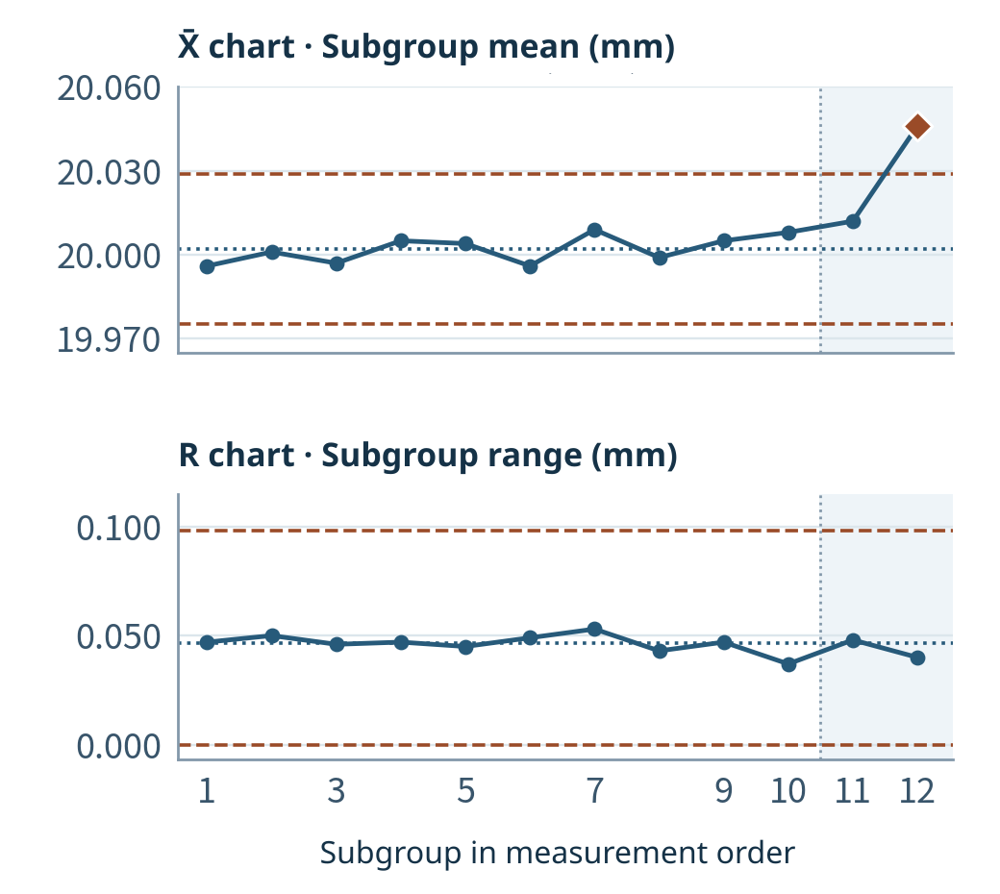

Scope and responsibilities
Clauses 4–5
Consider organisational roles and interested parties’ needs when defining the AIMS scope. Leadership establishes an AI policy and assigns roles, responsibilities and authority.
Work through quality management, organisational context and AI governance, then put the evidence together in an audit. The examples, data tables and coursebook diagrams below are in English.
ISO 9001:2026 builds on the seven quality management principles in ISO 9000. Use the process approach to connect activities and the Plan–Do–Check–Act cycle to evaluate and improve performance.
Identify inputs, activities and outputs. Trace how the output from one activity serves the next. Set objectives, responsibilities, resources, operating criteria and performance indicators for each process.
Example indicators include time to complete registration and the number of missed applications.
Check required fields before registration to reduce missed applications. An online form could also reduce duplicate data entry.
The process approach traces how work turns inputs into outputs and how the next process uses them. A turtle diagram is one way to describe a process under ISO 9001:2026 clause 4.4. Read across its body to follow the work, then use the four corners to examine resources, responsibilities, methods and performance.
Follow one order. Compare the date on the customer’s confirmation with the date in the production plan. If they differ, trace where each date came from. Change the handover so both teams use the same approved order, then check subsequent orders for the same error.
ISO guidance on the process approach · NQA guide to process auditing
PDCA applies to an individual process and the whole quality management system. Organisational context in clause 4 informs the cycle. Leadership in clause 5 applies throughout.
Clause 6 · Planning
Set objectives, identify resources and plan responses to risks and opportunities.
Clauses 7–8 · Support and operation
Provide competent people and resources and carry out the planned processes.
Clause 9 · Performance evaluation
Compare results with objectives. Evaluate performance through internal audits and management review.
Clause 10 · Improvement
Identify causes, implement improvements, check their effectiveness and feed the results into the next plan.
When auditing a process under clause 4.4, examine operating criteria, performance records and evidence of effective improvement. Compare objective evidence with the applicable requirements.
Competence is the ability to apply knowledge and skills to achieve an intended result. Clause 7.2 covers people working under the organisation’s control whose work affects the performance of its quality management system.
After practice, the inspector measures a part, reads the tolerance on the drawing and decides whether the part conforms. An assessor observes the technique and checks the decision against the specification. The practical assessment records both results.
Audit question · What evidence shows that this inspector can measure the part and decide independently whether it conforms?
A concession is permission from the relevant authority to use or release a product or service despite a specified requirement being unmet. The permission is usually limited by quantity, time or intended use.
The paint colour on ten enclosures differs from the contract sample. The contract requires customer approval. The customer agrees to accept this colour for these ten enclosures only. The original colour requirement applies to the next delivery.
Under 9.1.1, the organisation decides what to monitor and measure, which methods to use, when to collect the data and when to analyse and evaluate the results.
Suppose the monthly target is to issue at least 95% of certificates within five working days of confirming course completion. Both the target and the figures below are illustrative.
Auditor questions Ask “What pattern did you find in the late cases?” to examine analysis. Ask “What did you conclude when you compared the result with the target?” to examine evaluation.
English diagrams adapted from KCLI’s ISO 9001:2026 quality management systems coursebook, version 1.4.
Coursebook slide 43 · Clauses 0.3.1 and 4.4
Follow inputs from their source to the recipients of outputs and identify where to monitor or measure the process.
Coursebook slide 44 · Clauses 0.3.2 and 4–10
Organisational context informs the cycle of planning, operation, evaluation and improvement. Leadership applies throughout.
Coursebook slide 45 · Clauses 6.1.1–6.1.3
Identify risks and opportunities in the organisation’s context and interested parties’ requirements. Plan and implement actions and then assess their effectiveness.
Coursebook slide 288 · Clauses 8.7 and 10.2
Clause 8.7 addresses unintended use or delivery of nonconforming outputs. Clause 10.2 addresses the nonconformity, its causes and the effectiveness of corrective action.
Identify how internal and external conditions affect an objective, then use the findings to decide what to do.
Assess internal strengths (S) and weaknesses (W) alongside external opportunities (O) and threats (T) in relation to your objective.
SWOT can help identify internal and external issues under ISO 9001 clause 4.1. Consider issues affecting intended quality management results when planning actions on risks and opportunities under clause 6.1.
State the decision and identify the organisation, process and period under review.
Review performance and resources internally and customer needs, regulations and market trends externally. Record the source and date of each observation.
Place each factor in a quadrant by its origin and effect. Compare impact and urgency. Mark assumptions for verification.
Assign an owner, due date and indicator to each priority action. Revisit evidence and actions as conditions change.
A fictional auditor training provider is considering a tailored ISO 9001 audit workshop for corporate clients next quarter.
| Category | Supports the objective | Constrains the objective |
|---|---|---|
| Internal | S · Strength Existing cases and exercises cover audit report writing. Evidence · Workshop materials inventory |
W · Weakness Few instructors are available to cover the workshop if the lead instructor is absent. Evidence · Instructor assignments |
| External | O · Opportunity More companies are asking about customised audit workshops. Evidence · Corporate enquiry records |
T · Threat Competing providers offer more low-cost online courses. Evidence · Published schedules and tuition fees |
This TOWS example pairs internal and external factors to develop possible actions.
The provider needs an assigned instructor before it can confirm the session date.
Record defects, prioritise improvements and monitor changes in a process. Open a tool below to see how it applies to the same machining example.
The defect analysis covers 600 parts inspected on two lines. A separate sample of 60 diameter measurements forms 12 subgroups of five. All figures are fictional training data.

Rank defects from most to least frequent and plot cumulative percentages to identify priorities. Consider safety and cost alongside frequency.
Oversize diameter, burrs and surface scratches account for 70 out of 80 defects, or 87.5% of all recorded defects.
Cumulative percentage = defects counted up to a given rank ÷ total defects × 100
| Defect type | Count | Cumulative percentage |
|---|---|---|
| Oversize diameter | 32 | 40% |
| Burr | 23 | 68.75% |
| Surface scratch | 15 | 87.5% |
| Foreign material | 8 | 97.5% |
| Missing marking | 2 | 100% |

A cause-and-effect diagram groups potential causes of an outcome. The 6M categories used here are people, machinery, materials, methods, measurement and environment.
To investigate tool wear, compare diameters measured before and after tool replacement with the tool-use history.
| Category | Potential cause |
|---|---|
| People | Misunderstood offset criteria |
| Machine | Tool wear |
| Material | Variation in stock hardness |
| Method | Incorrect offset setting |
| Measurement | Gauge zero error |
| Environment | Change in shop temperature |

Group continuous measurements into intervals and plot frequencies to examine the centre, spread and asymmetry of the distribution.
19.98 mm to below 20.00 mm is the most frequent interval, with 20 measurements.
Relative frequency = number in the bin ÷ total observations. For an initial choice of bin count, consider √n or 1 + log₂(n).
| Diameter interval (mm) | Frequency |
|---|---|
| 19.96 to <19.98 | 5 |
| 19.98 to <20.00 | 20 |
| 20.00 to <20.02 | 19 |
| 20.02 to <20.04 | 13 |
| 20.04 to <20.06 | 2 |
| 20.06 to 20.08 inclusive | 1 |

Plot pairs of observations for the same unit or time. Pearson’s correlation coefficient r summarises the direction and strength of a linear relationship.
r ≈ 0.84 indicates a positive linear association. Control other factors, such as tool wear, before attributing a change to temperature.
r is the sum of the products of deviations from the respective means divided by the product of the square roots of the two sums of squared deviations.
| Subgroup | Temperature (°C) | Mean diameter (mm) |
|---|---|---|
| 1 | 20 | 19.996 |
| 2 | 22 | 20.001 |
| 3 | 21 | 19.997 |
| 4 | 24 | 20.005 |
| 5 | 23 | 20.004 |
| 6 | 21.5 | 19.996 |
| 7 | 25 | 20.009 |
| 8 | 22.5 | 19.999 |
| 9 | 23.5 | 20.005 |
| 10 | 24.5 | 20.008 |
| 11 | 25.5 | 20.012 |
| 12 | 27 | 20.046 |
| Defect type | Line A | Line B | Total |
|---|---|---|---|
| Oversize diameter | 14 | 18 | 32 |
| Burr | 8 | 15 | 23 |
| Surface scratch | 5 | 10 | 15 |
| Foreign material | 2 | 6 | 8 |
| Missing marking | 1 | 1 | 2 |
| Defective parts | 30 | 50 | 80 |
| Parts inspected | 200 | 400 | 600 |
Agree on where and when to inspect and which defect types to record. If several inspectors collect data, agree on classification criteria first.
The number of parts with a recorded primary defect was 30 on line A and 50 on line B. Use these records for the Pareto chart and stratified comparison.

Plot measurements in time order. The X̄ chart monitors subgroup means and the R chart monitors ranges. This example estimates limits from subgroups 1–10 and applies them to subgroups 11 and 12.
The twelfth mean is 20.046 mm, above the upper control limit of 20.029 mm. All ranges lie within their limits. Control limits describe process variation. Product acceptance uses separate specification limits.
A subgroup range is its maximum minus its minimum. Across the first ten subgroups, the grand mean is 20.002 mm and the mean range R̄ is 0.0464 mm.
X̄ limits = centre line ± A₂R̄. The R chart uses D₃R̄ and D₄R̄. For subgroups of five, A₂ = 0.577, D₃ = 0 and D₄ = 2.115.
| Control chart | Lower limit | Centre | Upper limit |
|---|---|---|---|
| X̄ | 19.975 | 20.002 | 20.029 |
| R | 0.000 | 0.046 | 0.098 |
Defect rate by line (%)
Compare groups sharing the same line, machine or shift. Where inspection volumes differ, use each group’s own inspected count as the denominator.
Line B has more defective parts. The defect rate on line A is 2.5 percentage points higher.
ISO/IEC 42001:2023 sets requirements for establishing, operating and improving an artificial intelligence management system (AIMS) for organisations that develop, provide or use AI systems. A certification audit evaluates the management system within its defined scope.
| Category | Meaning and example |
|---|---|
| Artificial intelligenceAI | The field that studies and develops methods and applications for implementing AI systems. Example A natural language processing technique that classifies enquiries by topic |
| AI systemAI system | A system designed to produce predictions, recommendations, content or decisions to meet human-defined objectives. Example An enquiry-routing service recommends a category and lets an agent review and change it |
| AI management systemAIMS | The policies, objectives and processes an organisation uses to develop, provide and use AI responsibly. Example The organisation sets operating criteria, assigns owners and manages the risks of misclassification and personal information processing |
Clauses 4–5
Consider organisational roles and interested parties’ needs when defining the AIMS scope. Leadership establishes an AI policy and assigns roles, responsibilities and authority.
Clauses 6.1.2–6.1.3 and 8.2–8.3
Assess consequences and, where appropriate, likelihood. Assign treatment priorities and controls. For example, require a human review of the category assigned to an enquiry.
Clauses 6.1.4 and 8.4
Consider how deployment, use and foreseeable misuse may affect individuals, groups and society. For example, check whether customers using one language wait longer for a response. Record the results and use them in risk assessment.
Clause 6.1.3 and Annexes A–B
Compare necessary risk treatment controls with Annex A. Record necessary controls and reasons for inclusion or exclusion in the SoA. Consult Annex B for implementation guidance.
Clauses 7–8 and Annex A.6–A.7
Apply the selected controls to data provenance and quality, pre-deployment validation, operational monitoring, changes and retirement.
Clauses 9–10
Compare indicators against AI objectives. Evaluate effectiveness through internal audit and management review. Investigate nonconformities and verify the effectiveness of corrective action.
ISO 19011:2026 gives guidance on audit principles, managing audit programmes, conducting individual audits and evaluating auditor competence.
For the ISO 19011 course, 12 hours refers to recognised training time and can differ from video running time. Online and in-person learners need the credited hours, a written assessment, workshop training and a workshop assessment. The online route also includes a separate computer-based test alongside the common written assessment.
English diagrams adapted from KCLI’s ISO 19011:2026 auditor coursebook, version 1.4.
Coursebook slide 78 · Clause 5
Review objectives, risks and opportunities, then establish, implement, monitor and improve the programme.
Coursebook slide 150 · Clauses 6.2–6.7
Follow the activities from initiation and preparation through conduct, reporting, completion and any follow-up.
Coursebook slide 220 · Clauses 6.4.7–6.4.9
Compare verified evidence with audit criteria to develop findings. The team reviews the findings together before reaching its conclusions.
Coursebook slide 293 · Clause 7
Choose evaluation criteria and methods that reflect the competence required. Use the results to form teams and develop auditors.
This fictional manufacturing case is a training example.
Apply integrity, fair presentation, due professional care, confidentiality, independence, evidence-based auditing and risk-based auditing. Identify conflicts of interest and base judgements on verifiable evidence.
Understand the applicable standard and subject area. Collect and verify evidence through interviews, observation and records. Build competence through training and audit experience and assess it by combining methods such as record review and witnessing an audit.
The team leader assigns work and coordinates conclusions and reporting. Auditors examine evidence in their assigned areas and record findings.
An audit programme under clause 5 coordinates objectives, schedules and resources over time. For each audit, establish objectives, scope and criteria and use the steps in clause 6.
Contact the auditee to confirm objectives, scope and criteria. Check whether information and resources are available and whether the audit is feasible.
Review documented information, consider risks and determine the activities, schedule, methods and team responsibilities.
Hold the opening meeting. Gather and verify evidence through interviews, observation and records. Compare evidence with criteria, agree on findings and conclusions and explain them at the closing meeting.
Document objectives, scope, criteria, evidence, findings and conclusions. State sampling limitations and unresolved differences, then send the report to the designated recipients.
Confirm the planned or agreed activities are complete. Manage records and confidential information under the agreed procedures.
Where applicable, verify that the auditee has completed corrections and corrective actions and that those actions are effective.
Personnel or a committee independent of the audit make the certification decision.
Compare verified audit evidence with the criteria to develop findings such as conformity or nonconformity (6.4.7–6.4.8). The team reviews its objectives and all findings to arrive at conclusions (6.4.9).
The audit criterion is the organisation’s procedure requiring the calibration status of measuring equipment in use to be identifiable.
Document the applicable requirement, what was found and where, and why the evidence shows that the requirement was not fulfilled.
Under ISO/IEC 17021-1, a major nonconformity affects the system’s ability to achieve its intended results. With a minor nonconformity, the system retains that ability.
Verifying calibration and updating the equipment label and register is a correction. If a missing pre-use check caused the omission, revise that procedure and verify whether recurrence has been prevented.